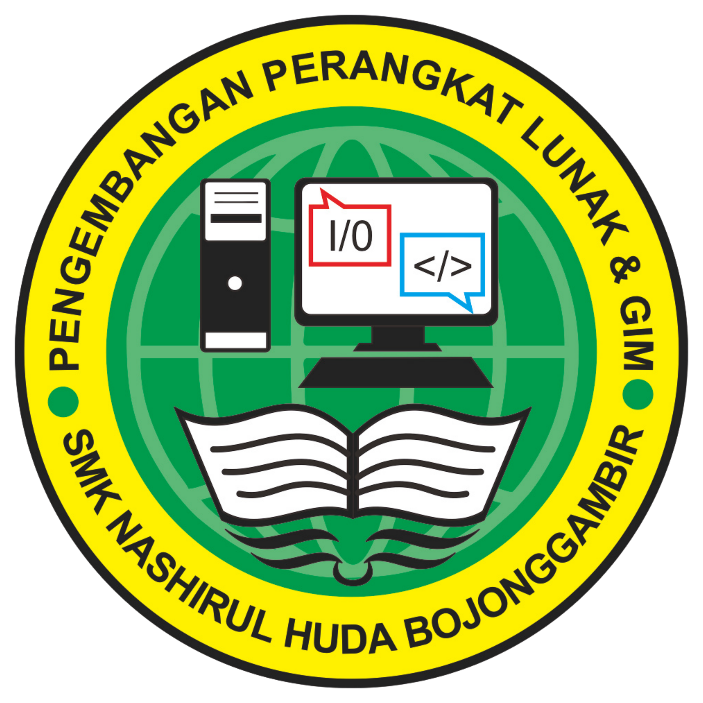
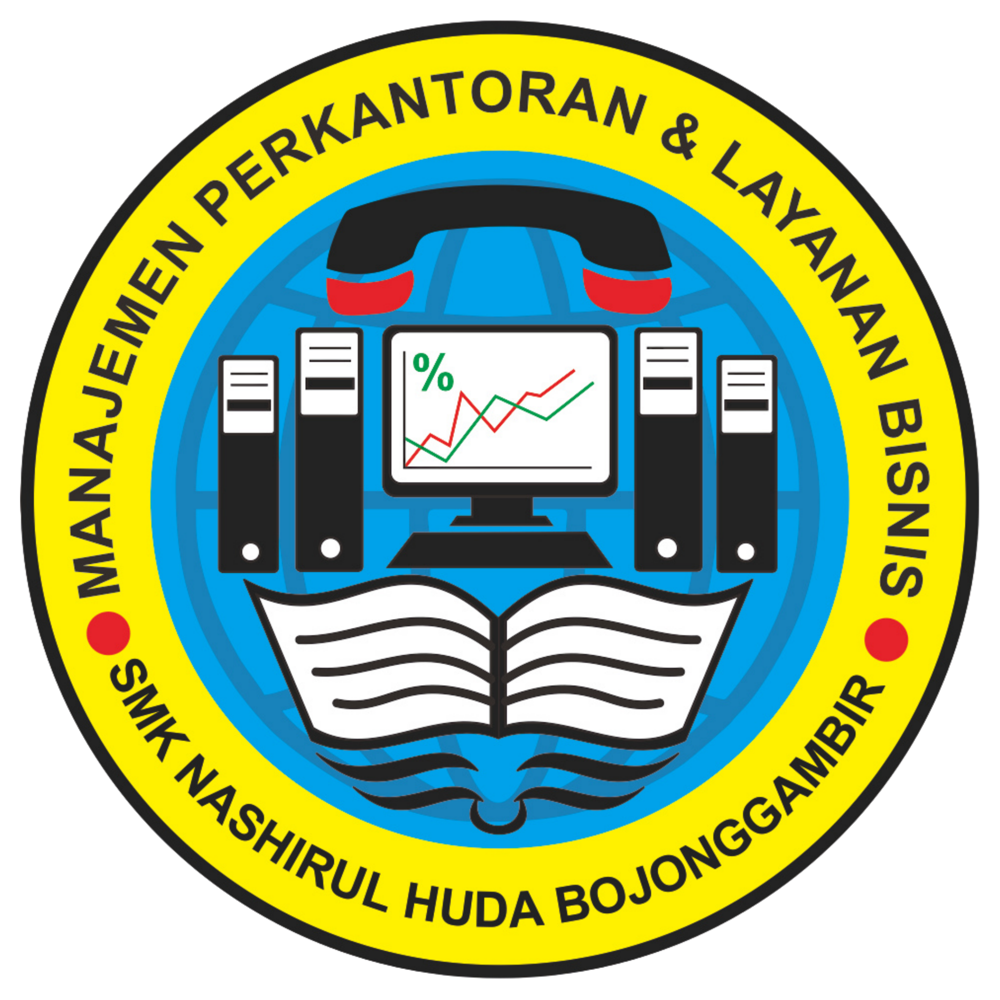

01 / PPLGPengembangan Perangkat Lunak dan Gim
Fondasi teknologi informasi, pemrograman, pengembangan aplikasi, proyek digital, dan kewirausahaan teknologi.
Jelajahi PPLGSMK Nashirul Huda Bojonggambir berfokus pada bidang teknologi komputer dan layanan bisnis perkantoran. Pembelajaran diarahkan untuk membentuk siswa yang terampil, berkarakter, mandiri, dan siap berkembang.
Setiap program memiliki karakter pembelajaran berbeda, tetapi tetap berada dalam satu budaya sekolah yang kolaboratif.

01 / PPLGFondasi teknologi informasi, pemrograman, pengembangan aplikasi, proyek digital, dan kewirausahaan teknologi.
Jelajahi PPLG
02 / MPLBAdministrasi modern, komunikasi profesional, pengelolaan dokumen, layanan pelanggan, dan bisnis digital.
Jelajahi MPLB02
Film sinematografi karya tim SMK Nashirul Huda untuk Piala Gubernur Pelajar Juara 2022. Informasi sekolah mencatat karya ini meraih Juara 2.
Sumber capaian: informasi langsung pengelola sekolah. Video dipublikasikan melalui kanal YouTube SMK Nashirul Huda.Foto masih berupa placeholder dan akan diganti dengan dokumentasi resmi sekolah.
Logo mitra hanya akan ditampilkan setelah status kerja sama dan izin penggunaan logo diverifikasi.